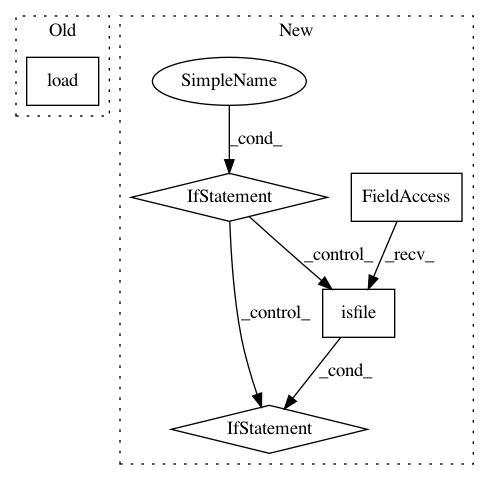

58ab225e313cde281696aca8bdfaff26695d879a,lingpy/data/model.py,Model,__init__,#Model#Any#Any#,109
Before Change
self.name = model
try:
self.converter = load(open(new_path+"converter.bin","rb"))
try:
self.scorer = load(open(new_path+"scorer.bin","rb"))
except:
pass
After Change
// check for scorer
// give always preference to scorer bin files
if os.path.isfile(new_path+"scorer.bin"):
self.scorer = load(open(new_path+"scorer.bin","rb"))
// second preference is given to matrix files
elif os.path.isfile(new_path + "matrix"):
self.scorer = read_scorer(new_path + "matrix")
// if none of the above fits, leave it
else:
pass
// read information from the info-file
self.info = {}
info = codecs.open(new_path+"INFO","r","utf-8").read()
In pattern: SUPERPATTERN
Frequency: 3
Non-data size: 5
Instances
Project Name: lingpy/lingpy
Commit Name: 58ab225e313cde281696aca8bdfaff26695d879a
Time: 2013-07-17
Author: mattis.list@posteo.de
File Name: lingpy/data/model.py
Class Name: Model
Method Name: __init__
Project Name: dPys/PyNets
Commit Name: 1707d2835528e8c1c7f927fdcd9e577871413371
Time: 2019-11-19
Author: dpisner@utexas.edu
File Name: pynets/fmri/estimation.py
Class Name:
Method Name: extract_ts_coords
Project Name: tech-srl/code2vec
Commit Name: c97d6c3d1037af9dce18321243cd576a65c61c26
Time: 2019-04-02
Author: eladnah@gmail.com
File Name: vocabularies.py
Class Name: Code2VecVocabs
Method Name: load_or_create